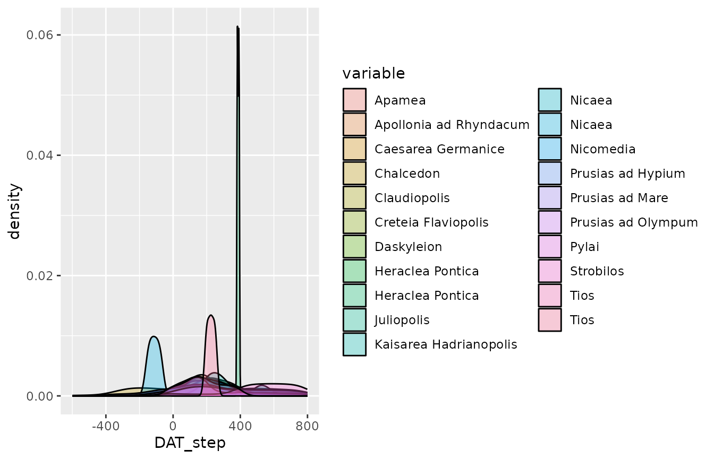
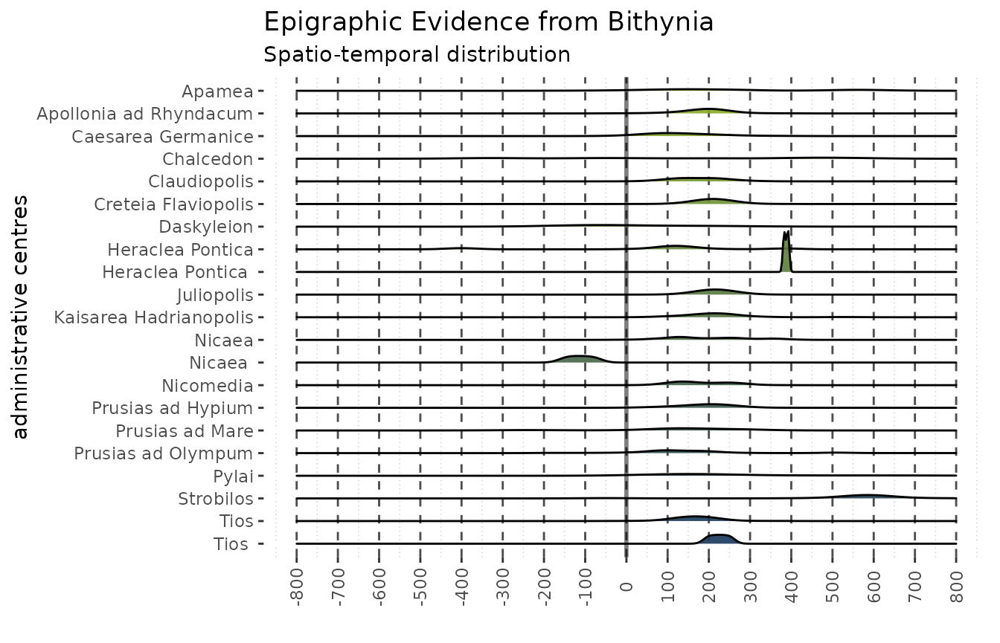
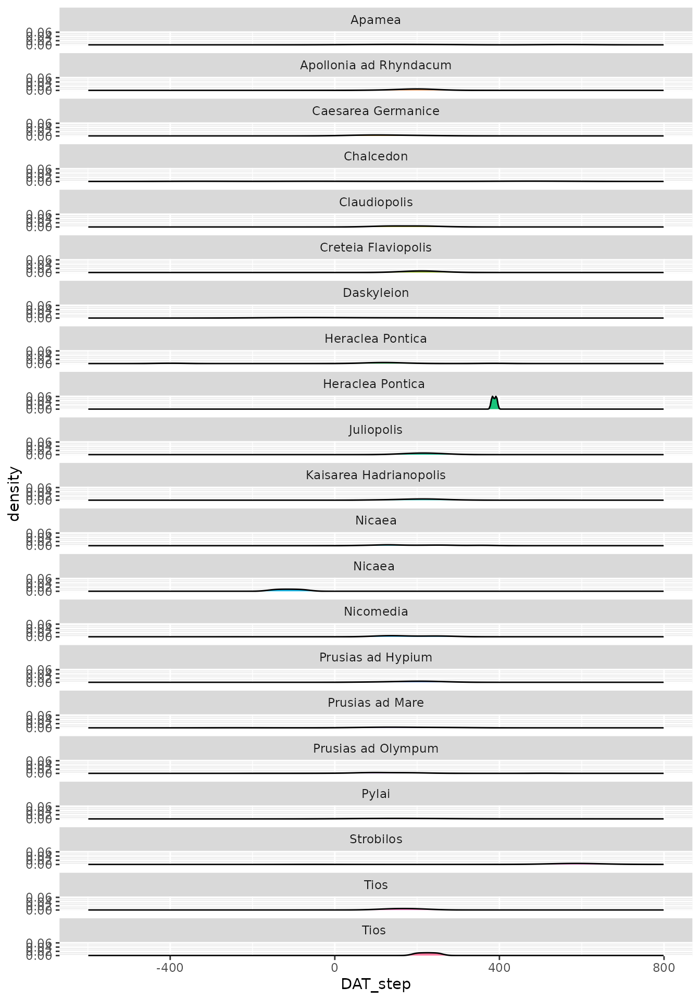
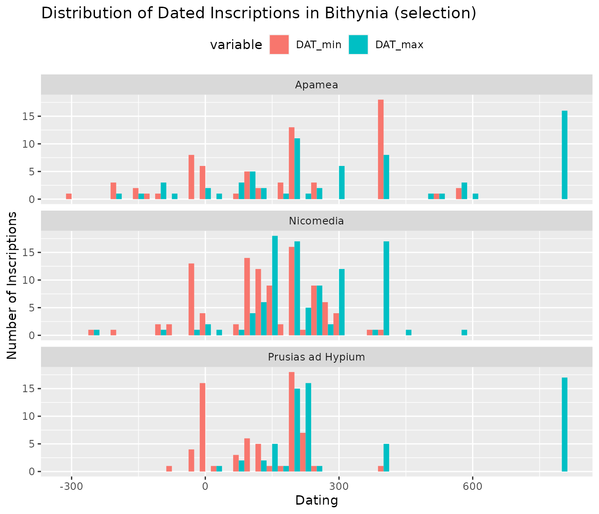

Archaeological data as it can be found “in the wild” rarely conforms
to the formats suitable for any kind of statistical analysis. This
vignette is intended as a way of demonstrating a possibility of data
cleaning on a data set as it can frequently be found in archaeological
literature, or put together during archaeological research. The data is
prepared for use with the datplot-package. An analysis
based on this data can be found as a case study in the paper “datplot: A
new R-Package for the Visualization of Date Ranges in Archaeology” (Weissova and Steinmann 2021) by the authors of
this package.
The inscriptions of Bithynia data set, that is included in this package, was compiled for a publication analyzing the settlement patterns and road systems in ancient Bithynia (Weissova 2019). The vignette is thus meant as guidance for archaeologists looking to employ the datplot-package, and finding themselves in need of reformatting their data without much experience in programming languages. It points to certain problems arising with data sets, which are often incarnated in the form of spreadsheets. The Bithynia data set is a typical example of the structure of data as it is used by many (classical) archaeologists. The process of cleaning it highlights solutions for the issues encountered with such spreadsheets, and may also be adapted to other data as well as fields.
First, we attach the packages to be used in the vignette:
library(dplyr)
library(stringr)
library(forcats)
library(ggplot2)
library(knitr)
library(datplot)
library(ggridges)
library(reshape2)The “Inscriptions of Bithynia” data set
The manually curated data that B. Weissova prepared for her
dissertation was saved as an Excel-spreadsheet. In order to comply with
CRAN, we slightly reformatted it into a csv-file containing only
ASCII-characters. We continue from this file, which is available in this repositories
“inst/extdata/”-sub-directory. It can be loaded into R without further
complications using the read.csv()-function.
Please note: Since the conversion of the original Excel file to CRAN-compatible ASCII-data this script does not convert all data anymore. I apologize for not updating this script, but it seems too irrelevant to spent more time on it than I already have, since the package contains the clean Data already. I am keeping this as a lesson that data is complicated, and that things change.
inscriptions <- read.csv(system.file("extdata",
"Bithynia_Inscriptions_ascii.csv",
package = "datplot"))
summary(inscriptions)
#> ikey Location Source Chronological.Frame
#> Length:2878 Length:2878 Length:2878 Length:2878
#> Class :character Class :character Class :character Class :character
#> Mode :character Mode :character Mode :character Mode :character
#> Language
#> Length:2878
#> Class :character
#> Mode :characterA large amount of the initial data was provided by the Searchable Greek Inscriptions
Tool of the Packard Humanities Institute and the Epigraphische
Datenbank Heidelberg. Those inscriptions (n = 0) can be referenced
in the databases with their ikey. The data set was
supplemented with 0 inscriptions that were manually gathered from
different sources. The relevant citations are to be found in the
Source column. Additional information on the creation and
curation of this data set can be found in the publication mentioned
above (Weissova 2019).
The original file consists of five columns which each row
representing a single inscription: ikey contains the
reference to the Searchable
Greek Inscriptions Tool of the Packard Humanities Institute,
indicated via PH as a prefix, or to the Epigraphische
Datenbank Heidelberg, indicated via HD as a prefix.
Location refers to the find spot of the inscription.
Source states the source of the data.
Chronological Frame contains the dating in a verbose
format, such as “Roman Imperial Period”. Language records
the language in which the inscription was written, which can either be
Latin, Greek, or both.
Data Preparation, Cleaning and Reformatting
The data set is not yet suited for analysis, as some variables, especially the chronological frame, have many inconsistencies. For further processing, we should also be sure to include an identifier-column. As 331 inscriptions do not have an ikey-Value, which might have otherwise been a good candidate for identification, we chose to create a new automatically generated ID, so that every inscription can be individually identifiable.
Two of the variables of this data set are almost ready for further use, i.e. Location and Language. A look at their unique values reveals only small inconsistencies that can be easily fixed:
unique(inscriptions$Location)
#> [1] "Apamea" "Apollonia ad Rhyndacum"
#> [3] "Caesarea Germanice" "Chalcedon"
#> [5] "Claudiopolis" "Creteia Flaviopolis"
#> [7] "Daskyleion" "Heraclea Pontica"
#> [9] "Heraclea Pontica " "Juliopolis"
#> [11] "Kaisarea Hadrianopolis" "Nicaea"
#> [13] "Nicaea " "Nicomedia"
#> [15] "Nicomedia (Dakibyza)" "Prusias ad Hypium"
#> [17] "Prusias ad Mare" "Prusias ad Mare (Keramed)"
#> [19] "Prusias ad Olympum" "Pylai"
#> [21] "Strobilos" "Tios"
#> [23] "Tios " "unknown"
#> [25] "unknown (Bolu museum)" "unknown (Lamounia ?)"
unique(inscriptions$Language)
#> [1] "Greek" "Gr/Lat" "Latin" "Gr / Lat"Using functions from the tidyverse package family, we
can easily transform the columns. We rename the “Chronological Frame” to
Dating, as shorter names without spaces are more convenient
to work with, and add proper NA-values if there is no chronological
assessment. With mutate() and replace() we
also clear out the redundant variable values from Location
and Language:
inscriptions <- inscriptions %>%
rename(Dating = Chronological.Frame) %>%
mutate(Dating = na_if(Dating, "---"),
Language = replace(Language, Language == "Gr/Lat", "Greek/Latin"),
Language = replace(Language, Language == "Gr / Lat", "Greek/Latin"),
Language = factor(Language, levels = c("Greek", "Latin",
"Greek/Latin")),
Location = replace(Location, str_detect(Location, "unknown"),
"unknown"),
Location = replace(Location,
Location == "Prusias ad Mare (Keramed)",
"Prusias ad Mare"),
Location = factor(Location))This conversion leaves us with a more compact overview of the data sets contents:
summary(inscriptions)
#> ikey Location Source
#> Length:2878 Nicaea :760 Length:2878
#> Class :character Nicomedia :501 Class :character
#> Mode :character Prusias ad Olympum:344 Mode :character
#> Claudiopolis :252
#> Chalcedon :200
#> Prusias ad Hypium :179
#> (Other) :642
#> Dating Language ID
#> Length:2878 Greek :2724 Length:2878
#> Class :character Latin : 125 Class :character
#> Mode :character Greek/Latin: 29 Mode :character
#>
#>
#>
#> Cleaning up the Dating-variable
Some of the values in the Dating-variable contain
question signs, indicating an uncertainty of the chronological frames
assessment. To keep this information, we store it in a new variable
uncertain_dating, which contains TRUE if there
was a question mark in the original assessment and FALSE if
the dating was certain, so that if one wishes the additional information
could later be used to select or exclude uncertain values.
inscriptions$uncertain_dating <- FALSE
sel <- grep("\\?", inscriptions$Dating)
inscriptions$uncertain_dating[sel] <- TRUE
inscriptions$Dating <- gsub("\\?", "", inscriptions$Dating)Creating a Concordance for Periods
The next step is sorting out values from the Dating
variable that have to be manually entered, such as the “Roman Imperial
Period”. We achieve this by excluding all values that contain a number,
preparing a table in which we can manually enter the desired dating span
and saving it as a .csv-file. After adding the values manually, we
reload the file. The manually edited concordance can be found in the
“inst/extdata/”-sub-directory of this repository in
the file periods_edit.csv and corresponds with the
chronological assessment of periods used in the original publication
(Weissova 2019, 42).
sel <- grepl("[0-9]", inscriptions$Dating)
periods <- data.frame("Dating" = unique(inscriptions$Dating[which(sel == FALSE)]))
periods$DAT_min <- NA
periods$DAT_max <- NA
#write.csv(periods, file = "../data-raw/periods.csv", fileEncoding = "UTF-8")
# .... Manual editing of the resulting table, saving it as "periods_edit.csv".
join_dating <- read.csv(file = system.file('extdata', 'periods_edit.csv',
package = 'datplot',
mustWork = TRUE),
row.names = 1,
colClasses = c("character", "character",
"integer", "integer"),
encoding = "UTF-8")It is of course possible to add the corresponding values in R. Since
the process could hardly be automated, this way seemed more efficient to
us, though it is - sadly - less transparent in this vignette. The values
can be examined by the reader in the csv-Table mentioned above, or by
loading the table via system.file() as seen in the code
chunk.
Reformatting of Partially Numerical Dating Values
There remains, however, a large amount of values that is not covered
in this concordance. We can easily automate some of the conversions as a
series of steps that we store in another data.frame called
num_dating, encompassing all the unique values that contain
some form of a numerical dating.
num_dating <- data.frame("Dating" = unique(inscriptions$Dating[which(sel == TRUE)]))
num_dating$DAT_min <- NA
num_dating$DAT_max <- NAFirst, there is a number of inscriptions dated to a single year. We
select these using a regular expression with grep()1 and can
simply delete the character-part of the values so that only the
specified year remains and is stored in both of the
DAT_-variables. We do this separately for AD and BC-values
since BC needs to be stored as a negative number.
sel <- grep("^[0-9]{1,3} AD$", num_dating$Dating)
num_dating$DAT_min[sel] <- gsub(" AD", "", num_dating$Dating[sel])
num_dating$DAT_max[sel] <- gsub(" AD", "", num_dating$Dating[sel])
sel <- grep("^[0-9]{1,3} BC$", num_dating$Dating)
num_dating$DAT_min[sel] <- paste("-", gsub(" BC", "", num_dating$Dating[sel]),
sep = "")
num_dating$DAT_max[sel] <- paste("-", gsub(" BC", "", num_dating$Dating[sel]),
sep = "")As a demonstration, this is the resulting table
(num_dating) of up to this point converted values:
| Dating | DAT_min | DAT_max | |
|---|---|---|---|
| 189 | 146 AD | 146 | 146 |
| 82 | 131 AD | 131 | 131 |
| 229 | 147 AD | 147 | 147 |
| 31 | 117 AD | 117 | 117 |
| 49 | 450 AD | 450 | 450 |
| 250 | 215 AD | 215 | 215 |
| 259 | 114 AD | 114 | 114 |
| 59 | 1 BC | -1 | -1 |
| 266 | 241 BC | -241 | -241 |
| 98 | 400 BC | -400 | -400 |
Since we frequently check the values in num_dating to
look for errors, we append the finished rows to
join_dating, which we later use as a look-up-table for our
data set, and remove the finished rows from num_dating.
join_dating <- rbind(join_dating, num_dating[!is.na(num_dating$DAT_min), ])
num_dating <- num_dating[which(is.na(num_dating$DAT_min)), ]We have to convert the Dating variable from
factor to character now, so we can use the
strsplit()-function on the values:
num_dating$Dating <- as.character(num_dating$Dating)As some of the values are in the format year-year, e.g. “150-160 AD”,
we can easily grab both numbers from the string. To achieve this, we
select all the rows containing the relevant format, then loop over each
of these rows and split the character string along either “-” or spaces,
and later “/”, as we chose to treat values of the format “198/198 AD” as
“197 - 198 AD”. Selecting the numerical values from the resulting list
according to their position gives us the desired values for
DAT_min and DAT_max. We need to do the same
for the BC-values to make sure they return as negative numbers.
# Values like: 92-120 AD
sel <- grep("^[0-9]{1,3}-[0-9]{1,3} AD", num_dating$Dating)
for (r in sel) {
split <- strsplit(x = num_dating$Dating[r], split = "-| ")
num_dating$DAT_min[r] <- split[[1]][1]
num_dating$DAT_max[r] <- split[[1]][2]
}
# Values like: AD 92-120
sel <- grep("^AD [0-9]{1,3}-[0-9]{1,3}$", num_dating$Dating)
for (r in sel) {
split <- strsplit(x = num_dating$Dating[r], split = "-| ")
num_dating$DAT_min[r] <- split[[1]][2]
num_dating$DAT_max[r] <- split[[1]][3]
}
# Values like: AD 92 - 120
sel <- grep("^AD [0-9]{1,3} - [0-9]{1,3}", num_dating$Dating)
for (r in sel) {
split <- strsplit(x = num_dating$Dating[r], split = " - | ")
num_dating$DAT_min[r] <- split[[1]][2]
num_dating$DAT_max[r] <- split[[1]][3]
}
# Values like: 198/199 AD
sel <- grep("^[0-9]{1,3}/[0-9]{1,3} AD", num_dating$Dating)
for (r in sel) {
split <- strsplit(x = num_dating$Dating[r], split = "/| ")
num_dating$DAT_min[r] <- split[[1]][1]
num_dating$DAT_max[r] <- split[[1]][2]
}
# Values like: 525-75 BC
sel <- grep("^[0-9]{1,3}-[0-9]{1,3} BC", num_dating$Dating)
for (r in sel) {
split <- strsplit(x = num_dating$Dating[r], split = "-| ")
num_dating$DAT_min[r] <- 0 - as.numeric(split[[1]][1])
num_dating$DAT_max[r] <- 0 - as.numeric(split[[1]][2])
}Another look at the data set can help us to check for possible errors.
| Dating | DAT_min | DAT_max | |
|---|---|---|---|
| 262 | 84-96 AD | 84 | 96 |
| 151 | AD 251 - 300 | 251 | 300 |
| 30 | 128/129 AD | 128 | 129 |
| 206 | 98/99 AD | 98 | 99 |
| 277 | AD 84 - 96 | 84 | 96 |
| 163 | 379-392 AD | 379 | 392 |
| 227 | 155/156 AD | 155 | 156 |
| 245 | 76-78 AD | 76 | 78 |
| 176 | 257/258 AD | 257 | 258 |
| 173 | 284-305 AD | 284 | 305 |
Putting aside the finished values again makes it easier to spot errors in the process:
Reformatting of Inscriptions Dated to Complete Centuries
Next, we separate values that identify complete centuries. As we want to express the dating in absolute numbers, we convert “1st c. AD” to a time span ranging from 0 to 99, and “1st c. BC” to -99 to 0 respectively. The regular expression selects all values, where a single number in the beginning of the string is followed by two letters (i.e. 2nd, 3rd, 1st) and “c. AD” resp. “c. BC”. We subtract one and multiply the number by 100 to get the respective boundaries, again taking care to treat AD and BC differently.
sel <- grep("^[0-9]{1}[a-z]{2} c\\. AD$", num_dating$Dating)
for (r in sel) {
split <- strsplit(x = num_dating$Dating[r], split = "[a-z]{2} c\\.")
split <- as.numeric(split[[1]][1])
num_dating$DAT_min[r] <- ((split - 1) * 100)
num_dating$DAT_max[r] <- ((split - 1) * 100) + 99
}
sel <- grep("^[0-9]{1}[a-z]{2} c\\. BC$", num_dating$Dating)
for (r in sel) {
split <- strsplit(x = num_dating$Dating[r], split = "[a-z]{2} c\\.")
split <- as.numeric(split[[1]][1])
num_dating$DAT_min[r] <- 0-(split * 100) + 1
num_dating$DAT_max[r] <- 0-((split - 1) * 100)
}| Dating | DAT_min | DAT_max | |
|---|---|---|---|
| 16 | 3rd c. AD | 200 | 299 |
| 25 | 1st c. BC | -99 | 0 |
| 41 | 6th c. BC | -599 | -500 |
| 15 | 3rd c. BC | -299 | -200 |
| 18 | 2nd c. AD | 100 | 199 |
| 116 | 4th c. AD | 300 | 399 |
| 17 | 2nd c. BC | -199 | -100 |
| 47 | 4th c. BC | -399 | -300 |
| 42 | 6th c. AD | 500 | 599 |
| 11 | 5th c. AD | 400 | 499 |
Again, putting aside the finished values makes it easier to spot errors in further processing:
Reformatting of Imprecise Dating Values
For dates that are around a certain value, i.e. of the format “ca. 190 AD”, we are not able to make a more informed decision than guess about what the researchers providing this assessment had in mind. This might also change from inscription to inscription. While a closer look at the individual inscriptions may yield a more sensible estimate, this seems not feasible as part of the data preparation process. It seems that in most cases, if the dating can be as precise as a span of around 10 years, researchers tend to emphasize this. Therefore, we decided to take a total span of 20 years, i.e. 10 years before and 10 years after the mentioned value, reflecting some uncertainty on the precision and duration of the estimate. “ca. 190 AD” thus becomes “180–200 AD”, with the same mechanism for BC in negative values.
sel <- grep("^ca\\. [0-9]{1,3} AD$", num_dating$Dating)
for (r in sel) {
split <- strsplit(x = num_dating$Dating[r], split = " ")
split <- as.numeric(split[[1]][2])
num_dating$DAT_min[r] <- split - 10
num_dating$DAT_max[r] <- split + 10
}
sel <- grep("^ca\\. [0-9]{1,3} BC$", num_dating$Dating)
for (r in sel) {
split <- strsplit(x = num_dating$Dating[r], split = " ")
split <- 0-as.numeric(split[[1]][2])
num_dating$DAT_min[r] <- split - 10
num_dating$DAT_max[r] <- split + 10
}| Dating | DAT_min | DAT_max | |
|---|---|---|---|
| 5 | ca. 200 AD | 190 | 210 |
| 6 | ca. 100 AD | 90 | 110 |
| 63 | ca. 130 AD | 120 | 140 |
| 203 | ca. 214 AD | 204 | 224 |
| 261 | ca. 360 BC | -370 | -350 |
Creating a Second Concordance for Verbose Chronological Assessments
Again, saving the finished values in join_dating leaves
us with the list of not yet converted values as seen in
num_datings Dating-variable.
join_dating <- rbind(join_dating, num_dating[!is.na(num_dating$DAT_min), ])
num_dating <- num_dating[which(is.na(num_dating$DAT_min)), ]
unique(num_dating$Dating)[1:20]
#> [1] "end of the 2nd c. AD"
#> [2] "end of 1st c. BC - beg. of 1st c. AD"
#> [3] "end 2nd c. BC"
#> [4] "early 1st c. AD"
#> [5] "after 212 AD"
#> [6] "AD 531"
#> [7] "5th/6th century AD"
#> [8] "3rd/4th century AD"
#> [9] "2nd - 3rd c. AD"
#> [10] "2nd - 1st c. BC"
#> [11] "1st - beg. of the 2nd c. AD"
#> [12] "1st - 2nd c. AD"
#> [13] "AD 117-138 "
#> [14] "2nd century AD"
#> [15] "late 3rd - early 2nd c. BC"
#> [16] "5th - 6th c. AD"
#> [17] "3rd quarter of the 6th c. BC"
#> [18] "3rd - 2nd c. BC"
#> [19] "340/339 BC"
#> [20] "27 BC-14 AD"Due to the heterogeneous nature of these 101 values, we decided to convert them manually again. Our criteria for translating terms like “beginning of” are the following: “beginning of”, “end of”, “early”, “late” are – similarly to ca. – all translated to 20 years, as we assume that more information would have been given if the time span was greater than a quarter century. For the other values, we employed the same criteria as seen above in the automated process. We decided to measure the ‘beginning of a century’ at e.g. -199 for BC values and 100 for AD values, and accordingly identify the ‘end of a century’ with the values e.g. -100 (BC) / 199 (AD). Since the data is epigraphical, in the case of “before” or “after” (i.e. terminus ante/post quem) dates, we assume some connection to a datable event, and therefore add or subtract a span of 10 years, which is, however, still rather arbitrary.
As the last step, we switch the – in some cases automatically assigned – year 0, so that it will be treated as either 1 or -1:
join_dating$DAT_min[which(join_dating$DAT_min == 0)] <- 1
join_dating$DAT_max[which(join_dating$DAT_max == 0)] <- -1We then have to reload the corrected data. The values that we put
aside in the join_dating data.frame beforehand
serve as the basis for our new data.frame that we use as a
look-up table. As the variables were treated as character-strings, we
need to convert them to a numeric format first. We append the newly
loaded manually assigned values to this data.frame. Again, to keep this
process as transparent as possible, we included the *.csv-Table in the
“inst/extdata/” sub-directory as “num_dating_edit.csv”.
#write.csv(num_dating, file = "../data-raw/num_dating.csv",
# fileEncoding = "UTF-8")
num_dating <- read.csv(file = system.file('extdata', 'num_dating_edit.csv',
package = 'datplot', mustWork = TRUE),
encoding = "UTF-8",
row.names = 1,
colClasses = c("character", "character",
"integer", "integer"))
join_dating <- join_dating %>%
mutate(DAT_min = as.integer(DAT_min),
DAT_max = as.integer(DAT_max)) %>%
rbind(num_dating)Joining the Reformatted Data with the Original Data Set
left_join() lets us add the DAT_-variables
from the look-up table join_dating to our original
data.frame.
inscriptions <- left_join(inscriptions, join_dating, by = "Dating")The DAT_-variables – as we can now see – contain the
desired information:
| ID | Location | Dating | DAT_min | DAT_max | |
|---|---|---|---|---|---|
| 628 | I_628 | Heraclea Pontica | end of the 1st c. AD | 80 | 99 |
| 1699 | I_1699 | Nicomedia | 286-305 AD | 286 | 305 |
| 1666 | I_1666 | Nicomedia | AD 150 - 200 | 150 | 200 |
| 1739 | I_1739 | Nicomedia | 122/123-126/127 AD | 122 | 127 |
| 1278 | I_1278 | Nicaea | 2nd century AD | 100 | 199 |
| 1422 | I_1422 | Nicaea | 1st c. BC | -99 | -1 |
| 794 | I_794 | Kaisarea Hadrianopolis | 223 AD | 223 | 223 |
| 2189 | I_2189 | Prusias ad Hypium | 219-221 AD | 219 | 221 |
| 1665 | I_1665 | Nicomedia | after 138 AD | 138 | 148 |
| 1376 | I_1376 | Nicaea | 2nd - 3rd c. AD | 100 | 299 |
| 1747 | I_1747 | Nicomedia | 116 AD | 116 | 116 |
| 638 | I_638 | Heraclea Pontica | 2nd c. AD | 100 | 199 |
| 2810 | I_2810 | Strobilos | Roman Imp. period | -31 | 395 |
| 2322 | I_2322 | Prusias ad Mare | Roman Imp. period | -31 | 395 |
| 2158 | I_2158 | Prusias ad Hypium | after 212 AD | 212 | 222 |
Fixing mistakes
We can now make a ‘test run’ using datplot with the stepsize-value
set to 5 in order to save as much time as possible2 and check for errors
first. We have to select exactly 4 columns in the correct order of:
Identifier, Grouping Variable, Minimum Dating, Maximum Dating. We
transform the output from the pipe operator to a data.frame
before handing it to datstepts(), as
datplot needs this format.
inscr_steps <- inscriptions %>%
select(ID, Location, DAT_min, DAT_max) %>%
na.omit() %>%
as.data.frame() %>%
datplot::datsteps(stepsize = 5)
#> Using 'weight'-calculation (see https://doi.org/10.1017/aap.2021.8).
#> Warning in switch.dating(DAT_df): Warning: Dating seems to be in wrong order at
#> ID I_1162, I_2725 (Index: 634, 1451). Dates have been switched, but be sure to
#> check your original data for possible mistakes.
#> DAT_min and DAT_max at Index: 60, 75, 138, 196, 211, 266, 331, 332, 344, 345, 622, 625, 727, 873, 877, 878, 930, 933, 935, 936, 939, 943, 981, 982, 1016, 1017, 1022, 1023, 1040, 1041, 1042, 1046, 1047, 1051, 1053, 1108, 1166, 1179, 1182, 1249, 1492, 1493, 1495, 1507, 1508, 1509 have the same value! Is this correct? If unsure, check your data for possible errors.
#> Warning in create.sub.objects(DAT_list, stepsize, calc, cumulative): stepsize
#> is larger than the range of the closest dated object at Index = 40, 44, 45, 60,
#> 75, 76, 77, 110, 123, 128, 129, 130, 138, 144, 151, 168, 193, 195, 196, 198,
#> 200, 201, 202, 211, 215, 237, 239, 240, 266, 289, 290, 320, 330, 331, 332, 333,
#> 334, 335, 336, 337, 338, 340, 343, 344, 345, 346, 347, 348, 351, 352, 353, 622,
#> 624, 625, 637, 643, 722, 723, 724, 725, 726, 727, 728, 729, 730, 731, 732, 733,
#> 873, 875, 876, 877, 878, 879, 880, 882, 883, 884, 886, 887, 929, 930, 933, 934,
#> 935, 936, 937, 938, 939, 940, 941, 942, 943, 949, 950, 951, 981, 982, 1010,
#> 1016, 1017, 1018, 1019, 1020, 1021, 1022, 1023, 1025, 1028, 1029, 1030, 1031,
#> 1038, 1040, 1041, 1042, 1043, 1044, 1045, 1046, 1047, 1051, 1053, 1054, 1059,
#> 1060, 1100, 1106, 1108, 1109, 1110, 1111, 1114, 1115, 1120, 1122, 1127, 1148,
#> 1166, 1168, 1169, 1177, 1179, 1182, 1248, 1249, 1253, 1449, 1473, 1480, 1487,
#> 1491, 1492, 1493, 1495, 1507, 1508, 1509). This is not recommended. For
#> information see documentation of get.step.sequence().There are indeed problems in the data. The first of the three
warnings issued by datsteps() informs us that we may have
assigned some values wrong: “Warning: Dating seems to be in wrong order
at ID I_1162, I_2725 (Index: 637, 1458). Dates have been switched, but
be sure to check your original data for possible mistakes.” If dates are
in the wrong order, datplot will automatically switch
them before proceeding. This, however, might not always be the correct
way of handling the situation, as other errors might have occurred as
well. Therefore, we should check the data again using the Index-Values
or IDs provided by datplots warning:
inscriptions %>%
select(ID, Location, Dating, uncertain_dating, DAT_min, DAT_max) %>%
na.omit() %>%
slice(637, 1458) %>%
kable()| ID | Location | Dating | uncertain_dating | DAT_min | DAT_max |
|---|---|---|---|---|---|
| I_1165 | Nicaea | 58 AD | FALSE | 58 | 58 |
| I_2732 | Prusias ad Olympum | 117-138 AD | FALSE | 117 | 138 |
The problem here is twofold. In the first entry, our automated
translation of the dating could not handle the format “62/3” and thus
returned a wrong value for DAT_max. If we had a truly large
data set, we should correct this in the original reformatting process.
In this case, it is more efficient to fix this problem right now in the
fastest possible way.
inscriptions[which(inscriptions$ID == "I_1162"),"DAT_max"] <- 63In the other case, the Dating-column provided the BC-values in the wrong order. We can also fix this quickly right here, which is basically the same way datplot would handle both cases internally:
inscriptions[which(inscriptions$ID == "I_2725"),c("DAT_min", "DAT_max")] <-
inscriptions[which(inscriptions$ID == "I_2725"),c("DAT_max", "DAT_min")]Note that datsteps() changes the date and proceeds, but
warns you of the possibility of errors. It is therefore recommended to
check the data mentioned in that warning. As we ‘fixed’ our data set, we
should save it again, so that the same error will not occur twice:
#write.table(inscriptions, file = "../data-raw/inscriptions.csv",
# fileEncoding = "UTF-8", sep = ";", row.names = FALSE)Storing the Prepared Data Set
For later use and publication, we add explanations of the variables and metadata to the R-object and store them in the *.rda file. As a backup, we also save the finished table as a .csv-file, suitable for archiving. The .csv-Table, however, does not contain the additional information added as attributes.
All files are available in this repository and as part of this package for further use by other researchers. We kindly ask you to cite Weissova (2019), the Packard Humanities Institute and this repository at https://github.com/lsteinmann/datplot as sources.
The dataset can be loaded into R by simply calling
#library(datplot)
data("Inscr_Bithynia")when datplot is loaded.
Selecting the Data for Further Analysis and using datplot
As our aim is to get an overview of the spatio-temporal distribution of the inscriptions in Bithynia, we can only analyze inscriptions with known Location and Dating. Thus, we have to remove all the rows from the data set that do not contain this information.
inscr_clean <- Inscr_Bithynia %>%
filter(Dating != "NA",
Location != "unknown") %>%
droplevels()This means that we removed a total of 1380 rows, which did not contain the information needed. The data set suitable for the analysis can be summarized as follows:
summary(inscr_clean)
#> ID ikey Location
#> Length:1498 Length:1498 Nicaea :603
#> Class :character Class :character Prusias ad Olympum :279
#> Mode :character Mode :character Nicomedia :108
#> Kaisarea Hadrianopolis: 87
#> Apamea : 77
#> Chalcedon : 69
#> (Other) :275
#> Source Dating Language uncertain_dating
#> Length:1498 Length:1498 Greek :1392 Mode :logical
#> Class :character Class :character Latin : 82 FALSE:1327
#> Mode :character Mode :character Greek/Latin: 24 TRUE :171
#>
#>
#>
#>
#> DAT_min DAT_max URL
#> Min. :-599.0 Min. :-525 Length:1498
#> 1st Qu.: -31.0 1st Qu.: 199 Class :character
#> Median : 100.0 Median : 253 Mode :character
#> Mean : 103.1 Mean : 289
#> 3rd Qu.: 200.0 3rd Qu.: 395
#> Max. : 680.0 Max. : 799
#> NA's :192 NA's :192datplot
We can now begin using the datplot-package…
…and can actually try to use datsteps(), first with a
stepsize of 25 years:
inscr_steps <- inscr_clean %>%
select(ID, Location, DAT_min, DAT_max) %>%
as.data.frame() %>%
datplot::datsteps(stepsize = 25) %>%
datplot::scaleweight(var = 2)
#> Using 'weight'-calculation (see https://doi.org/10.1017/aap.2021.8).
#> Warning in datplot::datsteps(., stepsize = 25): 192 rows with NA-values in the
#> dating columns will be omitted.
#> DAT_min and DAT_max at Index: 57, 68, 120, 173, 187, 238, 299, 300, 311, 312, 588, 590, 599, 679, 794, 798, 799, 828, 831, 833, 834, 837, 841, 878, 879, 908, 909, 914, 915, 931, 932, 933, 937, 938, 941, 942, 997, 1051, 1064, 1067, 1130, 1304, 1305, 1306 have the same value! Is this correct? If unsure, check your data for possible errors.
#> Warning in create.sub.objects(DAT_list, stepsize, calc, cumulative): stepsize
#> is larger than the range of the closest dated object at Index = 6, 12, 13, 17,
#> 18, 19, 20, 21, 38, 39, 40, 43, 44, 57, 67, 68, 69, 70, 72, 75, 98, 101, 102,
#> 106, 107, 112, 113, 114, 120, 122, 123, 129, 136, 137, 138, 142, 143, 146, 148,
#> 149, 150, 168, 170, 172, 173, 175, 177, 178, 179, 180, 181, 182, 186, 187, 189,
#> 190, 195, 203, 204, 205, 206, 207, 208, 209, 210, 212, 214, 215, 216, 217, 218,
#> 234, 238, 240, 241, 242, 245, 261, 262, 292, 293, 296, 297, 298, 299, 300, 301,
#> 302, 303, 304, 305, 306, 307, 308, 309, 310, 311, 312, 313, 314, 315, 316, 317,
#> 318, 319, 320, 543, 546, 547, 548, 549, 581, 582, 583, 584, 585, 586, 588, 590,
#> 591, 592, 593, 594, 595, 596, 597, 599, 602, 606, 672, 673, 674, 675, 676, 677,
#> 678, 679, 680, 681, 682, 683, 684, 685, 788, 789, 790, 791, 792, 793, 794, 795,
#> 796, 797, 798, 799, 800, 801, 802, 803, 804, 805, 806, 807, 808, 827, 828, 830,
#> 831, 832, 833, 834, 835, 836, 837, 838, 839, 840, 841, 842, 843, 844, 845, 846,
#> 847, 848, 849, 850, 866, 867, 870, 871, 872, 873, 874, 875, 878, 879, 880, 890,
#> 902, 903, 904, 905, 906, 907, 908, 909, 910, 911, 912, 913, 914, 915, 916, 917,
#> 918, 919, 920, 921, 922, 923, 924, 929, 930, 931, 932, 933, 934, 935, 936, 937,
#> 938, 939, 940, 941, 942, 943, 944, 945, 946, 947, 948, 949, 957, 958, 961, 962,
#> 963, 964, 965, 966, 967, 968, 969, 970, 989, 990, 995, 996, 997, 998, 999,
#> 1000, 1001, 1002, 1003, 1004, 1005, 1006, 1007, 1008, 1009, 1010, 1011, 1012,
#> 1013, 1014, 1015, 1016, 1029, 1030, 1031, 1035, 1036, 1051, 1053, 1054, 1055,
#> 1062, 1064, 1065, 1066, 1067, 1093, 1094, 1095, 1096, 1097, 1098, 1099, 1122,
#> 1124, 1125, 1126, 1127, 1129, 1130, 1133, 1225, 1267, 1268, 1269, 1270, 1271,
#> 1272, 1273, 1274, 1275, 1276, 1277, 1278, 1290, 1297, 1302, 1304, 1305, 1306).
#> This is not recommended. For information see documentation of
#> get.step.sequence().datsteps() tells us that a number or objects are dated
to one year, asking us if this is correct. We included this output to
avoid errors occurring through faulty values, as objects dated to one
year have a very high impact on the outcome. It might help to spot
problems or discrepancies in datasets as well, as the warning about the
order of dating above has already shown.
In a second step, we scale the weights according to our grouping variable (Location), so that the sum of weights in each group equals 1, which is important for displaying the weight correctly in a density plot.
Visualizing the Output of datsteps()
To get a general impression of the data set and the possibilities of
visualization, we explore and recommend different plot methods below.
The simplest and fastest way to plot the output with base R is the
plot() function in combination with the
density() function:
Using ggplot2
A somewhat crowded overview containing the Locations of all
Inscriptions can easily be achieved when using ggplot2 and
its geom_density()-method, which is based on the same
procedure as the density()-function used above. A result
may look like this:
ggplot(data = inscr_steps, aes(x = DAT_step, fill = variable,
weight = weight)) +
geom_density(alpha = 0.3)
#> Warning in density.default(x, weights = w, bw = bw, adjust = adjust, kernel =
#> kernel, : Selecting bandwidth *not* using 'weights'
#> Warning in density.default(x, weights = w, bw = bw, adjust = adjust, kernel =
#> kernel, : Selecting bandwidth *not* using 'weights'
#> Warning in density.default(x, weights = w, bw = bw, adjust = adjust, kernel =
#> kernel, : Selecting bandwidth *not* using 'weights'
#> Warning in density.default(x, weights = w, bw = bw, adjust = adjust, kernel =
#> kernel, : Selecting bandwidth *not* using 'weights'
#> Warning in density.default(x, weights = w, bw = bw, adjust = adjust, kernel =
#> kernel, : Selecting bandwidth *not* using 'weights'
#> Warning in density.default(x, weights = w, bw = bw, adjust = adjust, kernel =
#> kernel, : Selecting bandwidth *not* using 'weights'
#> Warning in density.default(x, weights = w, bw = bw, adjust = adjust, kernel =
#> kernel, : Selecting bandwidth *not* using 'weights'
#> Warning in density.default(x, weights = w, bw = bw, adjust = adjust, kernel =
#> kernel, : Selecting bandwidth *not* using 'weights'
#> Warning in density.default(x, weights = w, bw = bw, adjust = adjust, kernel =
#> kernel, : Selecting bandwidth *not* using 'weights'
#> Warning in density.default(x, weights = w, bw = bw, adjust = adjust, kernel =
#> kernel, : Selecting bandwidth *not* using 'weights'
#> Warning in density.default(x, weights = w, bw = bw, adjust = adjust, kernel =
#> kernel, : Selecting bandwidth *not* using 'weights'
#> Warning in density.default(x, weights = w, bw = bw, adjust = adjust, kernel =
#> kernel, : Selecting bandwidth *not* using 'weights'
#> Warning in density.default(x, weights = w, bw = bw, adjust = adjust, kernel =
#> kernel, : Selecting bandwidth *not* using 'weights'
#> Warning in density.default(x, weights = w, bw = bw, adjust = adjust, kernel =
#> kernel, : Selecting bandwidth *not* using 'weights'
#> Warning in density.default(x, weights = w, bw = bw, adjust = adjust, kernel =
#> kernel, : Selecting bandwidth *not* using 'weights'
#> Warning in density.default(x, weights = w, bw = bw, adjust = adjust, kernel =
#> kernel, : Selecting bandwidth *not* using 'weights'
#> Warning in density.default(x, weights = w, bw = bw, adjust = adjust, kernel =
#> kernel, : Selecting bandwidth *not* using 'weights'
#> Warning in density.default(x, weights = w, bw = bw, adjust = adjust, kernel =
#> kernel, : Selecting bandwidth *not* using 'weights'Note that the output without the weights calculated by
datsteps() is very different:
ggplot(data = inscr_steps, aes(x = DAT_step, fill = variable)) +
geom_density(alpha = 0.3)
The weights calculated by datplot (internally using
the get.weights()-function) are a way of assigning an
importance to the objects in question. They relate to the range an
object is dated to (more detailed information on the process is
available in (Weissova and Steinmann
2021)). Therefore, any objects dated to large time spans as for
example “Roman Imperial Period” ranging from 31 BC to 395 AD in our data
set, are contributing to the curve significantly less than any object
dated to one exact year. At times it can be very useful to look at both
outputs and discuss them separately. We will look at a case study of a
single city later on to clarify this.
Using ggplot2 and ggridges
Since the graph is very crowded in this layout, we actually recommend
using geom_density_ridges from the
ggridges-package. Since the package has no built in support
for assigning weight, we have to use stat = "density",
which will reference the density()-function to get the
appropriate calculations:
ggplot(data = inscr_steps,
aes(x = DAT_step,
y = fct_rev(as_factor(variable)),
fill = variable,
weight = weight)) +
geom_density_ridges(aes(height = after_stat(density)),
stat = "density", alpha = 0.9) +
scale_fill_discrete(guide = FALSE)
#> Warning in density.default(x, weights = w, bw = bw, adjust = adjust, kernel =
#> kernel, : Selecting bandwidth *not* using 'weights'
#> Warning in density.default(x, weights = w, bw = bw, adjust = adjust, kernel =
#> kernel, : Selecting bandwidth *not* using 'weights'
#> Warning in density.default(x, weights = w, bw = bw, adjust = adjust, kernel =
#> kernel, : Selecting bandwidth *not* using 'weights'
#> Warning in density.default(x, weights = w, bw = bw, adjust = adjust, kernel =
#> kernel, : Selecting bandwidth *not* using 'weights'
#> Warning in density.default(x, weights = w, bw = bw, adjust = adjust, kernel =
#> kernel, : Selecting bandwidth *not* using 'weights'
#> Warning in density.default(x, weights = w, bw = bw, adjust = adjust, kernel =
#> kernel, : Selecting bandwidth *not* using 'weights'
#> Warning in density.default(x, weights = w, bw = bw, adjust = adjust, kernel =
#> kernel, : Selecting bandwidth *not* using 'weights'
#> Warning in density.default(x, weights = w, bw = bw, adjust = adjust, kernel =
#> kernel, : Selecting bandwidth *not* using 'weights'
#> Warning in density.default(x, weights = w, bw = bw, adjust = adjust, kernel =
#> kernel, : Selecting bandwidth *not* using 'weights'
#> Warning in density.default(x, weights = w, bw = bw, adjust = adjust, kernel =
#> kernel, : Selecting bandwidth *not* using 'weights'
#> Warning in density.default(x, weights = w, bw = bw, adjust = adjust, kernel =
#> kernel, : Selecting bandwidth *not* using 'weights'
#> Warning in density.default(x, weights = w, bw = bw, adjust = adjust, kernel =
#> kernel, : Selecting bandwidth *not* using 'weights'
#> Warning in density.default(x, weights = w, bw = bw, adjust = adjust, kernel =
#> kernel, : Selecting bandwidth *not* using 'weights'
#> Warning in density.default(x, weights = w, bw = bw, adjust = adjust, kernel =
#> kernel, : Selecting bandwidth *not* using 'weights'
#> Warning in density.default(x, weights = w, bw = bw, adjust = adjust, kernel =
#> kernel, : Selecting bandwidth *not* using 'weights'
#> Warning in density.default(x, weights = w, bw = bw, adjust = adjust, kernel =
#> kernel, : Selecting bandwidth *not* using 'weights'
#> Warning in density.default(x, weights = w, bw = bw, adjust = adjust, kernel =
#> kernel, : Selecting bandwidth *not* using 'weights'
#> Warning in density.default(x, weights = w, bw = bw, adjust = adjust, kernel =
#> kernel, : Selecting bandwidth *not* using 'weights'
#> Warning: The `guide` argument in `scale_*()` cannot be `FALSE`. This was deprecated in
#> ggplot2 3.3.4.
#> ℹ Please use "none" instead.
#> This warning is displayed once every 8 hours.
#> Call `lifecycle::last_lifecycle_warnings()` to see where this warning was
#> generated.Styling will help to make the plots more readable:
bluegreen <- colorRampPalette(c("#8dae25", "#17365c"))
ggplot(data = inscr_steps,
aes(x = DAT_step,
y = fct_rev(as_factor(variable)),
fill = variable,
weight = weight)) +
geom_density_ridges(aes(height = after_stat(density)), stat = "density", alpha = 0.9) +
scale_x_continuous(breaks = seq(from = -800, to = 800, by = 100),
limits = c(-800,800), name = "") +
geom_vline(xintercept = 0, alpha = 0.5, lwd = 1) +
theme(axis.text.x = element_text(angle = 90, vjust = 0.5),
panel.background = element_blank(),
panel.grid.major.x = element_line(linetype = "dashed",
color = "gray30"),
panel.grid.minor.x = element_line(linetype = "dotted",
color = "gray80")) +
scale_fill_manual(guide=FALSE,
values = bluegreen(length(unique(inscr_steps$variable)))) +
labs(title = "Epigraphic Evidence from Bithynia",
subtitle = "Spatio-temporal distribution",
y = "administrative centres",
caption = attributes(inscriptions)$source)
#> Warning in density.default(x, weights = w, bw = bw, adjust = adjust, kernel =
#> kernel, : Selecting bandwidth *not* using 'weights'
#> Warning in density.default(x, weights = w, bw = bw, adjust = adjust, kernel =
#> kernel, : Selecting bandwidth *not* using 'weights'
#> Warning in density.default(x, weights = w, bw = bw, adjust = adjust, kernel =
#> kernel, : Selecting bandwidth *not* using 'weights'
#> Warning in density.default(x, weights = w, bw = bw, adjust = adjust, kernel =
#> kernel, : Selecting bandwidth *not* using 'weights'
#> Warning in density.default(x, weights = w, bw = bw, adjust = adjust, kernel =
#> kernel, : Selecting bandwidth *not* using 'weights'
#> Warning in density.default(x, weights = w, bw = bw, adjust = adjust, kernel =
#> kernel, : Selecting bandwidth *not* using 'weights'
#> Warning in density.default(x, weights = w, bw = bw, adjust = adjust, kernel =
#> kernel, : Selecting bandwidth *not* using 'weights'
#> Warning in density.default(x, weights = w, bw = bw, adjust = adjust, kernel =
#> kernel, : Selecting bandwidth *not* using 'weights'
#> Warning in density.default(x, weights = w, bw = bw, adjust = adjust, kernel =
#> kernel, : Selecting bandwidth *not* using 'weights'
#> Warning in density.default(x, weights = w, bw = bw, adjust = adjust, kernel =
#> kernel, : Selecting bandwidth *not* using 'weights'
#> Warning in density.default(x, weights = w, bw = bw, adjust = adjust, kernel =
#> kernel, : Selecting bandwidth *not* using 'weights'
#> Warning in density.default(x, weights = w, bw = bw, adjust = adjust, kernel =
#> kernel, : Selecting bandwidth *not* using 'weights'
#> Warning in density.default(x, weights = w, bw = bw, adjust = adjust, kernel =
#> kernel, : Selecting bandwidth *not* using 'weights'
#> Warning in density.default(x, weights = w, bw = bw, adjust = adjust, kernel =
#> kernel, : Selecting bandwidth *not* using 'weights'
#> Warning in density.default(x, weights = w, bw = bw, adjust = adjust, kernel =
#> kernel, : Selecting bandwidth *not* using 'weights'
#> Warning in density.default(x, weights = w, bw = bw, adjust = adjust, kernel =
#> kernel, : Selecting bandwidth *not* using 'weights'
#> Warning in density.default(x, weights = w, bw = bw, adjust = adjust, kernel =
#> kernel, : Selecting bandwidth *not* using 'weights'
#> Warning in density.default(x, weights = w, bw = bw, adjust = adjust, kernel =
#> kernel, : Selecting bandwidth *not* using 'weights'
Using ggplot2 and facet_wrap()
Another option is to separate the variables with
facet_wrap, which is not as condensed and does not support
the option to scale the densities in the graph for maximum visibility,
as geom_density_ridges() automatically does (see
Documentation of ggridges). In our case, this leads to a
worse visibility of smaller density curves:
ggplot(data = inscr_steps, aes(x = DAT_step,
fill = variable, weight = weight)) +
geom_density(alpha = 0.9) +
scale_fill_discrete(guide = FALSE) +
facet_wrap(variable ~ ., ncol = 1)
#> Warning in density.default(x, weights = w, bw = bw, adjust = adjust, kernel =
#> kernel, : Selecting bandwidth *not* using 'weights'
#> Warning in density.default(x, weights = w, bw = bw, adjust = adjust, kernel =
#> kernel, : Selecting bandwidth *not* using 'weights'
#> Warning in density.default(x, weights = w, bw = bw, adjust = adjust, kernel =
#> kernel, : Selecting bandwidth *not* using 'weights'
#> Warning in density.default(x, weights = w, bw = bw, adjust = adjust, kernel =
#> kernel, : Selecting bandwidth *not* using 'weights'
#> Warning in density.default(x, weights = w, bw = bw, adjust = adjust, kernel =
#> kernel, : Selecting bandwidth *not* using 'weights'
#> Warning in density.default(x, weights = w, bw = bw, adjust = adjust, kernel =
#> kernel, : Selecting bandwidth *not* using 'weights'
#> Warning in density.default(x, weights = w, bw = bw, adjust = adjust, kernel =
#> kernel, : Selecting bandwidth *not* using 'weights'
#> Warning in density.default(x, weights = w, bw = bw, adjust = adjust, kernel =
#> kernel, : Selecting bandwidth *not* using 'weights'
#> Warning in density.default(x, weights = w, bw = bw, adjust = adjust, kernel =
#> kernel, : Selecting bandwidth *not* using 'weights'
#> Warning in density.default(x, weights = w, bw = bw, adjust = adjust, kernel =
#> kernel, : Selecting bandwidth *not* using 'weights'
#> Warning in density.default(x, weights = w, bw = bw, adjust = adjust, kernel =
#> kernel, : Selecting bandwidth *not* using 'weights'
#> Warning in density.default(x, weights = w, bw = bw, adjust = adjust, kernel =
#> kernel, : Selecting bandwidth *not* using 'weights'
#> Warning in density.default(x, weights = w, bw = bw, adjust = adjust, kernel =
#> kernel, : Selecting bandwidth *not* using 'weights'
#> Warning in density.default(x, weights = w, bw = bw, adjust = adjust, kernel =
#> kernel, : Selecting bandwidth *not* using 'weights'
#> Warning in density.default(x, weights = w, bw = bw, adjust = adjust, kernel =
#> kernel, : Selecting bandwidth *not* using 'weights'
#> Warning in density.default(x, weights = w, bw = bw, adjust = adjust, kernel =
#> kernel, : Selecting bandwidth *not* using 'weights'
#> Warning in density.default(x, weights = w, bw = bw, adjust = adjust, kernel =
#> kernel, : Selecting bandwidth *not* using 'weights'
#> Warning in density.default(x, weights = w, bw = bw, adjust = adjust, kernel =
#> kernel, : Selecting bandwidth *not* using 'weights'
Styling also helps very much to improve the graphs readability:
ggplot(data = inscr_steps, aes(x = DAT_step,
fill = variable, weight = weight)) +
geom_density(alpha = 0.9) +
theme(panel.background = element_blank()) +
scale_fill_manual(guide=FALSE,
values = bluegreen(length(unique(inscr_steps$variable)))) +
scale_x_continuous(breaks = seq(from = -800, to = 800, by = 100),
limits = c(-800,800), name = "") +
facet_wrap(variable ~ ., ncol = 1) +
theme(strip.text.x = element_text(size=8),
strip.background = element_blank(),
axis.text.x = element_text(angle = 90, vjust = 0.5),
axis.text.y = element_blank(),
axis.ticks.y = element_blank(),
axis.title.y = element_blank(),
panel.background = element_blank(),
panel.grid.major.x = element_line(linetype = "dashed",
color = "gray30"),
panel.grid.minor.x = element_line(linetype = "dotted",
color = "gray80")) +
labs(title = "Epigraphic Evidence from Bithynia",
subtitle = "Spatio-temporal distribution",
caption = attributes(inscriptions)$source)
#> Warning in density.default(x, weights = w, bw = bw, adjust = adjust, kernel =
#> kernel, : Selecting bandwidth *not* using 'weights'
#> Warning in density.default(x, weights = w, bw = bw, adjust = adjust, kernel =
#> kernel, : Selecting bandwidth *not* using 'weights'
#> Warning in density.default(x, weights = w, bw = bw, adjust = adjust, kernel =
#> kernel, : Selecting bandwidth *not* using 'weights'
#> Warning in density.default(x, weights = w, bw = bw, adjust = adjust, kernel =
#> kernel, : Selecting bandwidth *not* using 'weights'
#> Warning in density.default(x, weights = w, bw = bw, adjust = adjust, kernel =
#> kernel, : Selecting bandwidth *not* using 'weights'
#> Warning in density.default(x, weights = w, bw = bw, adjust = adjust, kernel =
#> kernel, : Selecting bandwidth *not* using 'weights'
#> Warning in density.default(x, weights = w, bw = bw, adjust = adjust, kernel =
#> kernel, : Selecting bandwidth *not* using 'weights'
#> Warning in density.default(x, weights = w, bw = bw, adjust = adjust, kernel =
#> kernel, : Selecting bandwidth *not* using 'weights'
#> Warning in density.default(x, weights = w, bw = bw, adjust = adjust, kernel =
#> kernel, : Selecting bandwidth *not* using 'weights'
#> Warning in density.default(x, weights = w, bw = bw, adjust = adjust, kernel =
#> kernel, : Selecting bandwidth *not* using 'weights'
#> Warning in density.default(x, weights = w, bw = bw, adjust = adjust, kernel =
#> kernel, : Selecting bandwidth *not* using 'weights'
#> Warning in density.default(x, weights = w, bw = bw, adjust = adjust, kernel =
#> kernel, : Selecting bandwidth *not* using 'weights'
#> Warning in density.default(x, weights = w, bw = bw, adjust = adjust, kernel =
#> kernel, : Selecting bandwidth *not* using 'weights'
#> Warning in density.default(x, weights = w, bw = bw, adjust = adjust, kernel =
#> kernel, : Selecting bandwidth *not* using 'weights'
#> Warning in density.default(x, weights = w, bw = bw, adjust = adjust, kernel =
#> kernel, : Selecting bandwidth *not* using 'weights'
#> Warning in density.default(x, weights = w, bw = bw, adjust = adjust, kernel =
#> kernel, : Selecting bandwidth *not* using 'weights'
#> Warning in density.default(x, weights = w, bw = bw, adjust = adjust, kernel =
#> kernel, : Selecting bandwidth *not* using 'weights'
#> Warning in density.default(x, weights = w, bw = bw, adjust = adjust, kernel =
#> kernel, : Selecting bandwidth *not* using 'weights'How Does Datplot and Kernel Density Estimation Perform Compared to Histograms?
In order to compare this output to generally more common visualizations, we can prepare a histogram of the original data. Here we have two possible approaches. We first prepare a two-part histogram for the upper and lower boundaries of the respective dating for each object. We select only three locations to keep the visualization short:
inscr_clean %>%
select(ID, Location, DAT_min, DAT_max) %>%
filter(Location %in% c("Prusias ad Hypium", "Nicomedia", "Apamea")) %>%
reshape2::melt(id.vars = c("ID", "Location")) %>%
ggplot(aes(x = value, fill = variable)) +
geom_histogram(binwidth = 25, position = "dodge") +
facet_wrap(. ~ Location, ncol = 1) +
labs(title = "Distribution of Dated Inscriptions in Bithynia (selection)",
x = "Dating", y = "Number of Inscriptions") +
theme(legend.position = "top")
#> Warning: attributes are not identical across measure variables; they will be
#> dropped
#> Warning: Removed 30 rows containing non-finite values (`stat_bin()`).
Alternatively, we could display the mean of the Dating range:
inscr_clean %>%
transmute(ID, Location, Language, DAT_mean = ((DAT_min + DAT_max)/2)) %>%
filter(Location %in% c("Prusias ad Hypium", "Nicomedia", "Apamea")) %>%
reshape2::melt(id.vars = c("ID", "Location", "Language")) %>%
ggplot(aes(x = value, fill = Language)) +
geom_histogram(binwidth = 25) +
facet_wrap(. ~ Location, ncol = 1) +
labs(title = "Distribution of Dated Inscriptions in Bithynia (selection)",
x = "Dating", y = "Number of Inscriptions")
#> Warning: Removed 15 rows containing non-finite values (`stat_bin()`).While this also gives us an impression of the distribution, it seems some information got lost on the way. Many inscriptions were dated to large time spans, and those have now been gathered into their mean value. The upside is that the histograms show the real count of inscriptions, which density graphs cannot.
We have shown in this vignette, how a data set as it is often encountered by archaeologists can be prepared and formatted in order to be processed by datplot. Furthermore, we have made some suggestions on visualization. This vignette hopes to help researchers that are not yet very familiar with the processes of data cleaning to solutions for their own projects.